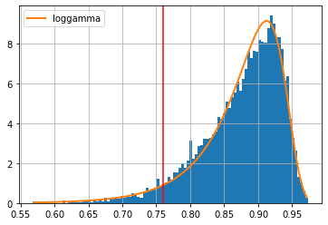

In this paper, we present AISHELL-3, a large-scale multi-speaker Mandarin speech
corpus which could be used to train multi-speaker Text-To-Speech (TTS) systems.
The corpus contains roughly 85 hours of emotion-neutral recordings spanning across 218 native Chinese mandarin
speakers.
Their auxiliary attributes such as gender, age group and native accents are explicitly marked and provided in
the corpus.
Moreover, transcripts in Chinese character-level and pinyin-level are provided along with the recordings.
We also present some data processing strategies and techniques which match with the characteristics of the
presented corpus and conduct experiments on multiple speech-synthesis systems to assess the quality of the
generated speech samples,
showing promising results. The corpus is available online at openslr.org/93/ under Apache v2.0 license.
Dataset Samples
Sample audios and labels from the AISHELL-3 dataset (in original 44.1kHz format)
The following section exhibits audio samples generated by Tacotron trained on AISHELL-3.
synthesized real-speakers
Labels
北京上海等一线城市土地市场持续火爆
持起红缨枪追赶对方半公里
由一个人的知识系统规定了的特定形式结构和意义的句子的数目也是无线的
而上年同期为盈利三百四十一点五万元
synthesized sampled-speakers
Labels
智能电子设备所具有的能力也越来越丰富
智能电子设备所具有的能力也越来越丰富
中国吉林网讯今年二九岁的农安县合隆镇人王源
所以在乔姆斯基的四种类型的文法中最适合描写自然语言的还是上下文无关文法
Cross-Speaker Migration Duration on Fastspeech
Fastspeech + DM
Fastspeech raw
Label
让科技能够普罗大众需要解决三大问题
并对中心设立的北京马拉松反兴奋剂教育点大加赞赏
虽然公司该季丽润同比增长百分之二十六
北京上海等一线城市土地市场持续火爆
Determining the mutual-exclusive threshold d
When counting the number of distinct voices from a pool of sampled voiced U,
we define two voices are mutually-exlusive if their respective mean embedding in the SV embedding space
share a cosine-similarity of less than d. (see Section. 4.5 of the paper) This threshold d is chosen to
be the 5% quantile (ppf(0.05)) of the fitted distribution of the distance between known sample points and their
respective class-mean.
We first gather data for this analysis by calculating the similairty between all ground-truth samples and their
speaker mean embeddings.
The distribution of the collected data are fitted using the python package `Fitter`, which tries to fit the
given dataset using
common distributions and report the top-k best choices. The best fitted distribution we chose is the
loggmma distribution
.

Figure 1. shows the histogram, distribution pdf and chosen threshold d (red vertical line) for SV system
ecapa-tdnn